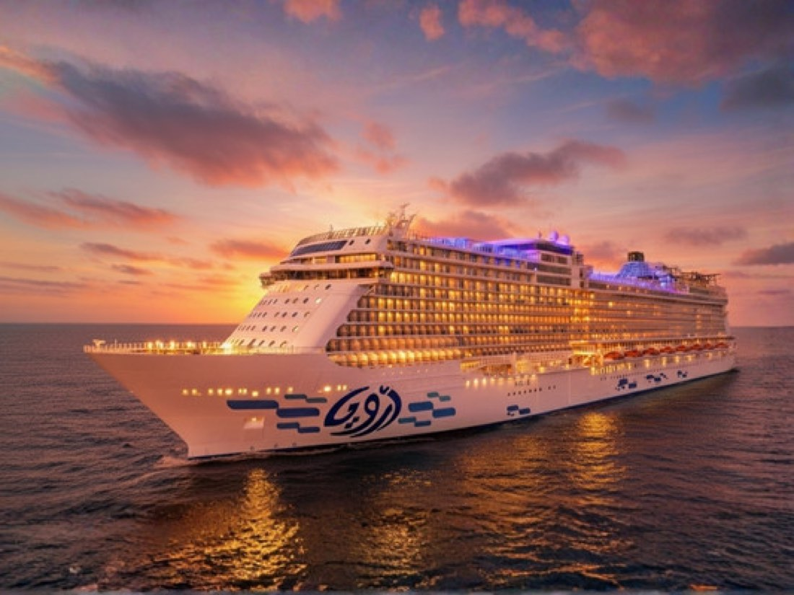

CruiseÖnceki dönemCruise Gemisi ile Marmaris - Bodrum - Kaş - İskenderiye
Marmaris, Bodrum, Kaş, İskenderiye
Güncel tarih ve fiyatiçin arayın
İncele →
Şehir etiketine dokunun; programın o günü açılsın.
Aşağıdaki fiyatlar önceki dönem içindir. Güncel fiyat, tarih ve kontenjan için bizi arayın.
| İki Kişilik Odada Kişi Başı | $800 |
|---|
* Geminin fiyatları anlık olarak değişebilmektedir. Fiyat bilgili 2 kişilik kabinde kişi başı fiyatı ortalama olarak verilmiştir. En güncel fiyat için bizimle irtibata geçebilirsiniz.
Öğle yemeğini müteakip seçilen tipte kabinlere yerleşim sonrası konaklama cruise gemisinde. İstanbul'dan 23.59'da Bodrum'a hareket ediyoruz.Not: Odaya giriş işlemleri 14.00'da başlamaktadır.
Cruise gemisiyle denizde seyrimize devam ediyoruz. Tam gün cruise gemisinin imkanlarından faydalanabilirsiniz.
Bodrum varış: 11.00. Gemide alacağımız kahvaltının ardından dileyen misafirler Bodrum'da gezebilir veya geminin rehberli turlarına katılabilir.
Gemide alacağımız kahvaltının ardından Rodos'a varıyoruz. Varış: 08.00. Varışımızın ardından dileyen misafirler Rodos'un UNESCO Dünya Mirası listesindeki eski şehirde yürüyüş yapabilirler. Gemiye dönüşün ardından saat 18.00'de Mikonos'a haraket ediyoruz.
Mikonos'a varışımız sonrasında gemide alınacak kahvaltının ardından dileyen misafirlerimiz Mikonos'u gezebilir veya geminin imkanlarından faydalanabilirler.
Dileyen misafirlerimiz Aroya'nın düzenlediği rehberli turlara katılabilir veya geminin imkanlarından faydalanabilirler. Atina'dan İstanbul'a hareket saati: 23.59.
Cruise gemisiyle İstanbul'a kadar denizde seyrimize devam ediyoruz. Tam gün cruise gemisinin imkanlarından faydalanabilirsiniz.
Gemide alacağımız kahvaltının ardından gemiden çıkış işlemlerimizi yapıp tatilimizi tamamlıyoruz.
Önemli Not: Satışına aracılık ettiğimiz “Cruise Turları” Suudi Arabistan’da faaliyet gösteren “Aroya Cruises” firmasının bir “Mavi Yolculuk” organizasyonudur. Gemide alkol servisi ve kumarhane yoktur. Tüm yiyecekler helaldir. Bazı havuz ve spor salonlarında hanımlara özel saat uygulaması vardır. Ancak Türkiye’de faaliyet gösteren islami otellerin hiçbirisinde olmadığı gibi bu gemide de tesettür zorunluluğu yoktur. Gemide gayrimüslim misafirler olabilir.
Aroya Cruise Turları, FAS TUR'un bir organizasyonu değildir. Acentamız, Aroya Cruises ile müşteri arasında aracı konumdadır. İptal ve değişiklik durumunda Aroya Cruises iptal ve değişiklik şartları geçerlidir.Bir başka organizasyonda buluşmak üzere…

CruiseÖnceki dönem